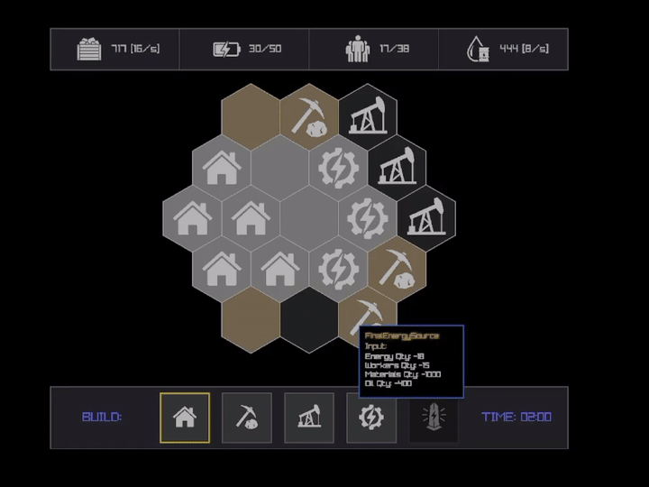

Raylib · Team Project
HexGrid
RaylibStrategy puzzleHUD
Videogioco sviluppato in Raylib: un time-based resource management e strategy puzzle. L'obiettivo è costruire la “Final Energy Source” nel minor tempo possibile, bilanciando la gestione delle risorse.
Anteprima

Il mio contributo
- Sviluppo di mappa e HUDImplementazione degli elementi grafici di contorno e della rappresentazione della mappa a schermo.
- Il giocoResource management a tempo: vince chi costruisce prima la Final Energy Source.